Parametric mechanical design, assemblies with real mates, finite-element analysis validated against theory, and path-traced product renders. Everything here is built with free, scriptable tools, so every part, number and image regenerates from source.
A base with three dovetail rails and slide-in modules: a phone stand, a hex pen cup and an organic pebble planter. Any module fits any rail. It went from concept sketches through CAD, print preparation, structural and thermal simulation, drawings and renders.
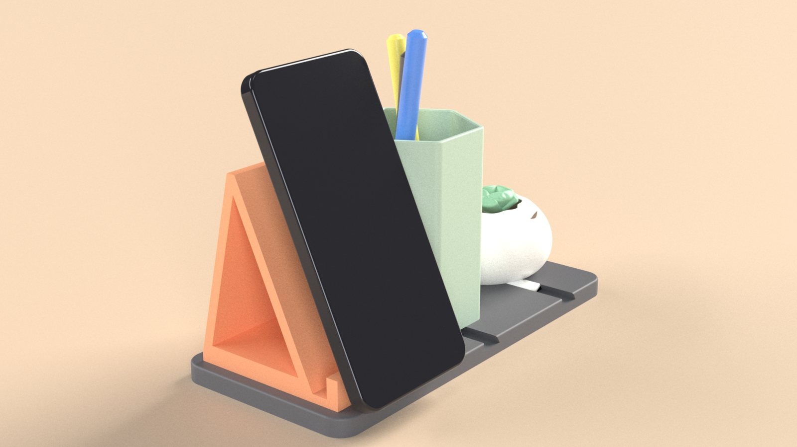
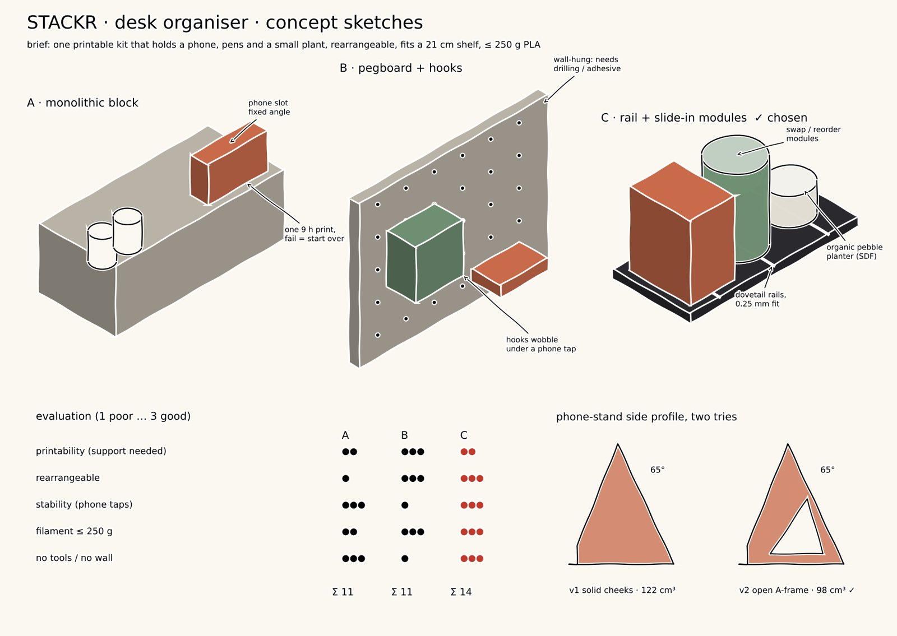
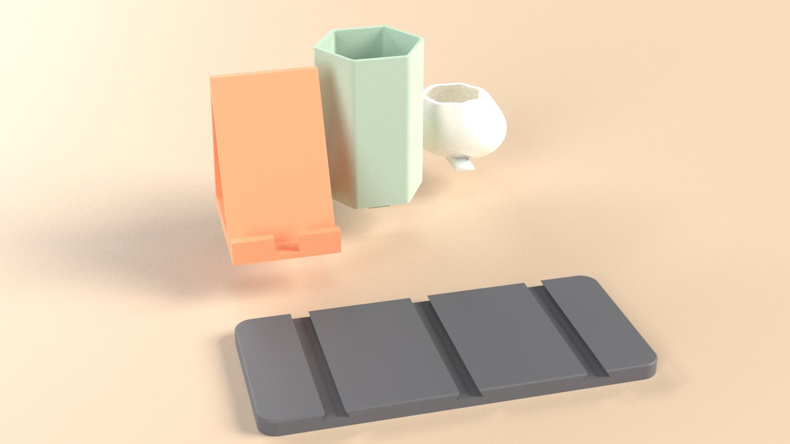
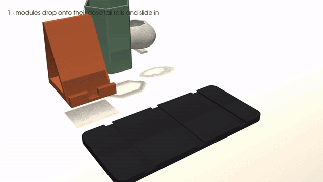
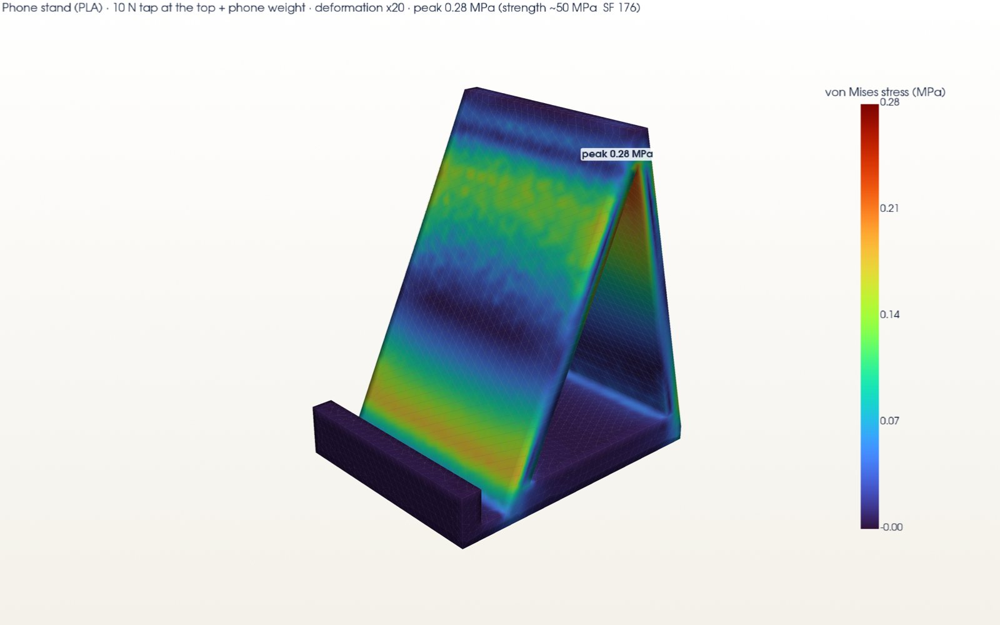
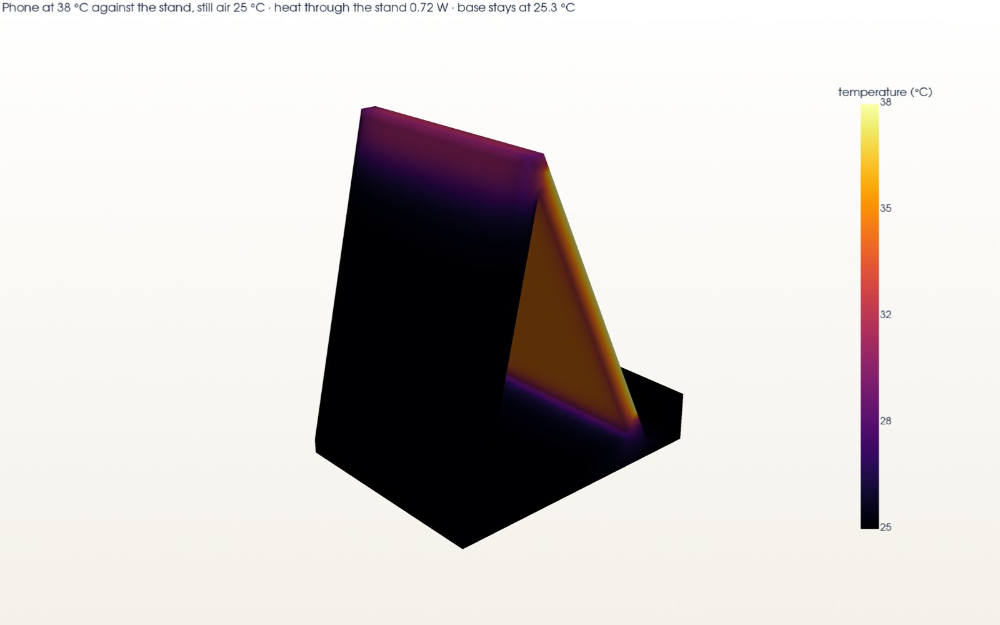
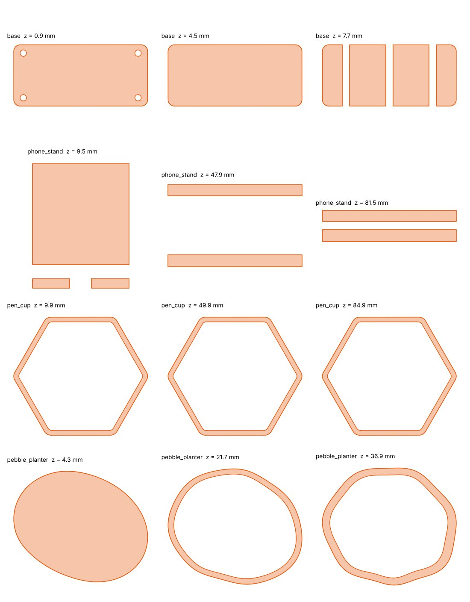
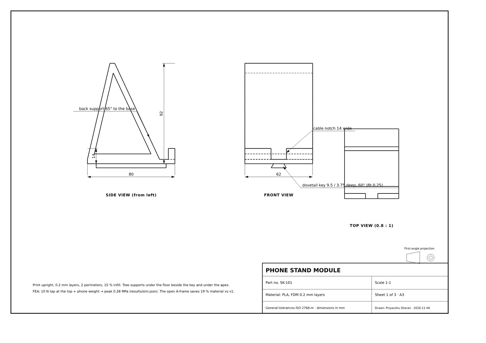
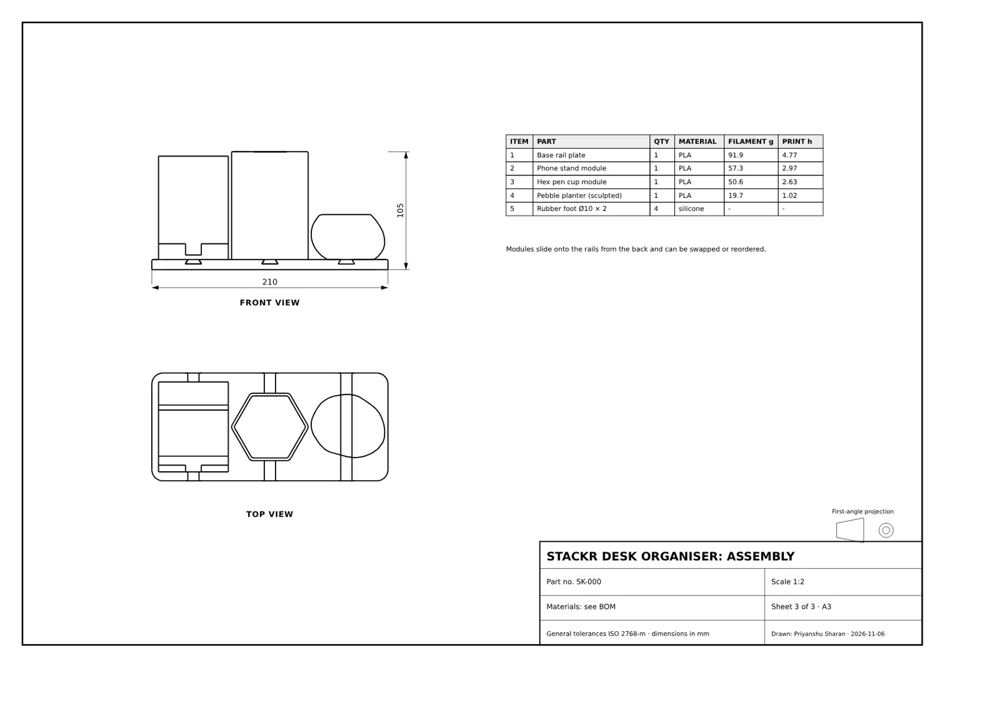
z15 → z25 → z40 at module 2, with involute teeth generated from first principles. A mate solver couples the joints, and a boolean check shows 0.000 mm³ overlap through a full tooth cycle. Contact ratios are 1.55 and 1.66. There are 16 part instances, with dimensioned A3 drawings in ISO conventional gear representation.
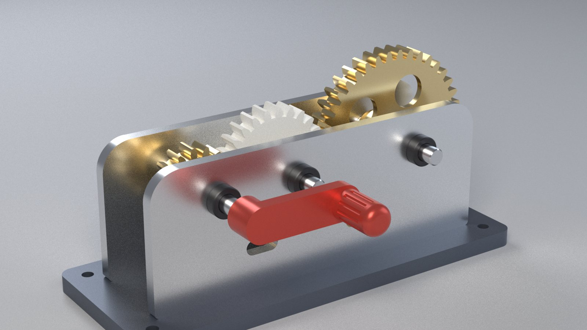
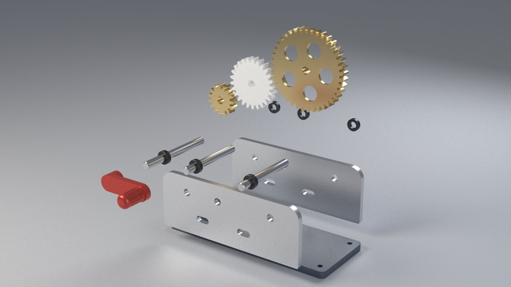
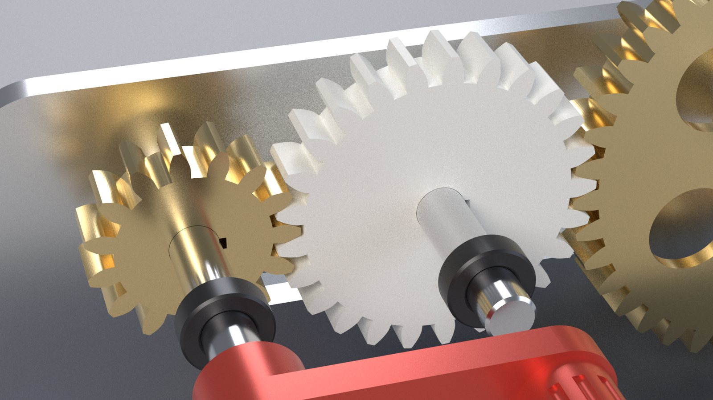
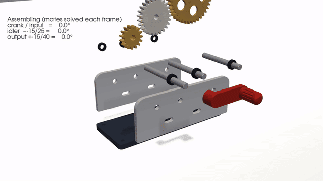
The solver was validated first: a cantilever matches beam theory to 0.03 % in stress. A bracket study then separates the real fillet stress (about 104 MPa, SF 2.6) from a bolt-bore singularity, and a fillet sweep shows R4 beats both R1 and R8. The mini project is a 12 m steel footbridge as a 3D frame model: equilibrium closes exactly, SLS deflection is 4.3 mm against an L/400 limit, and resizing cut the steel by 54 %.
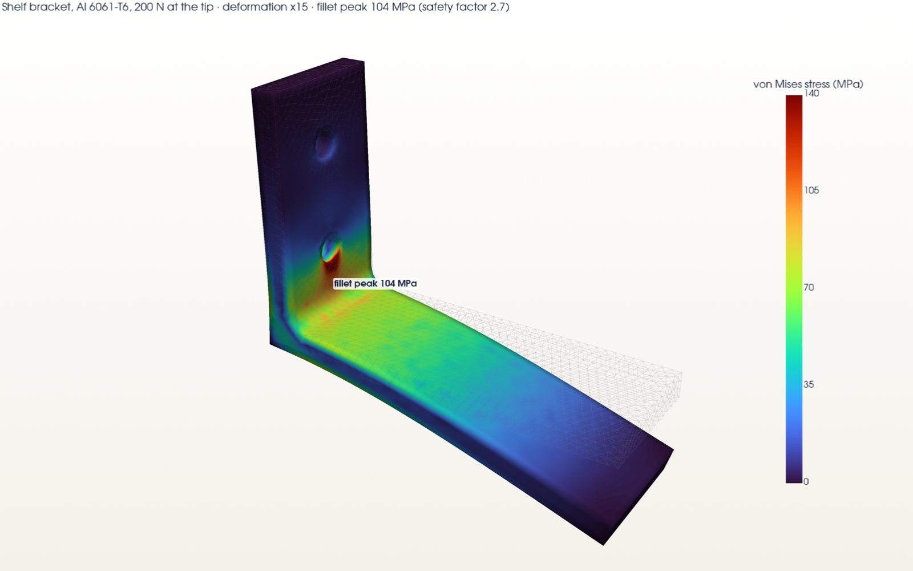
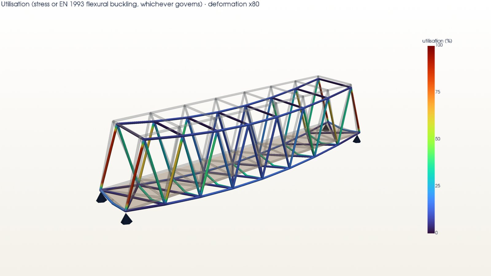
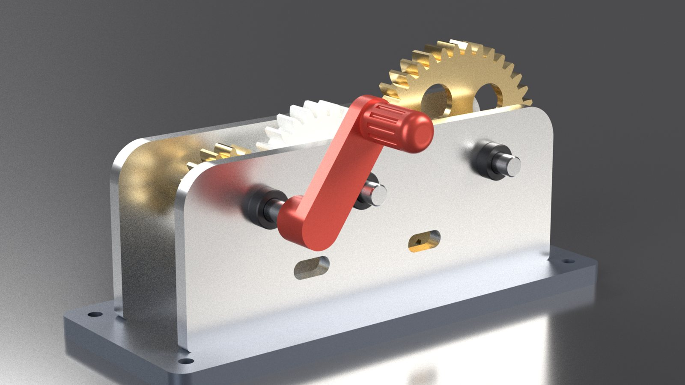
An OpenSCAD desk scene with five parametric objects and a documented three-point lighting layout. It started the habit carried through every later week: dimensions live in parameters, not in mouse clicks.